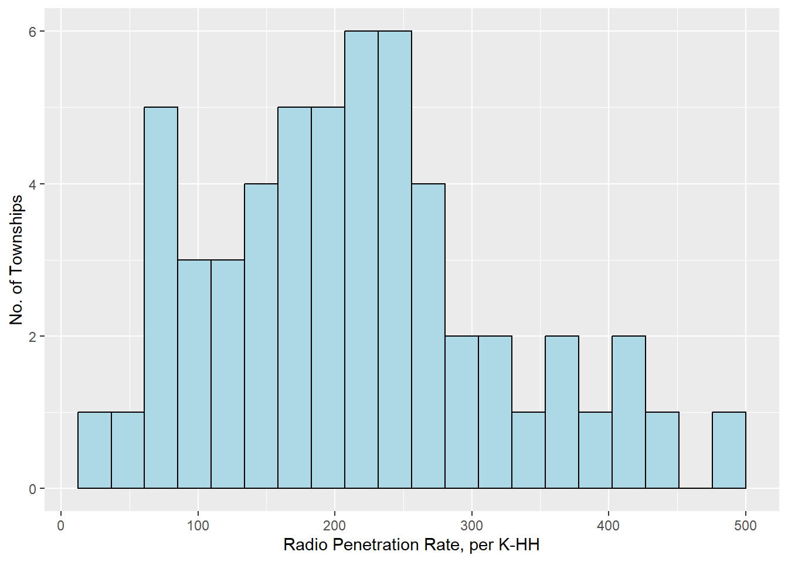
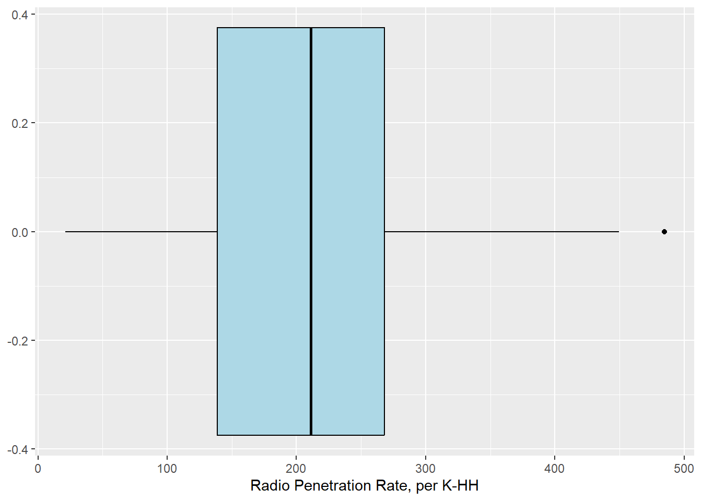
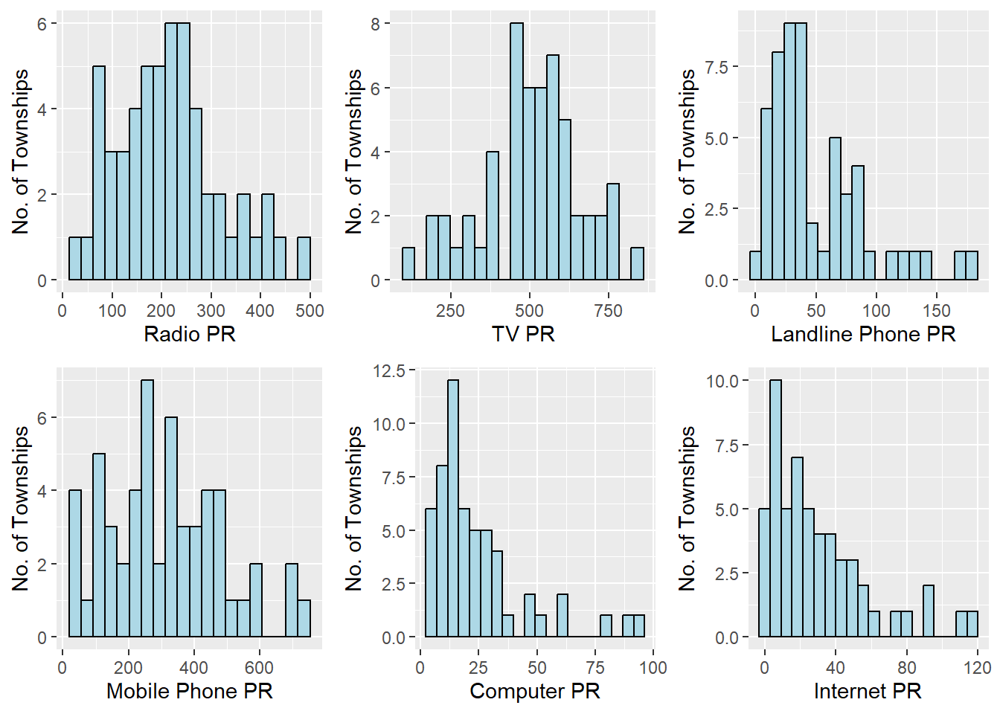
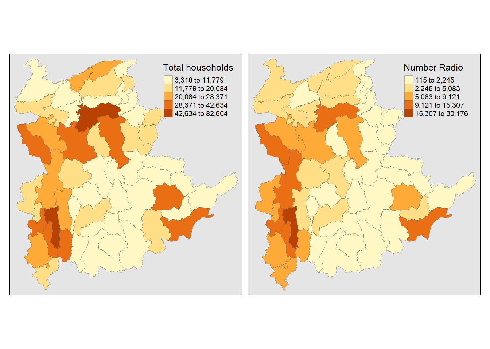
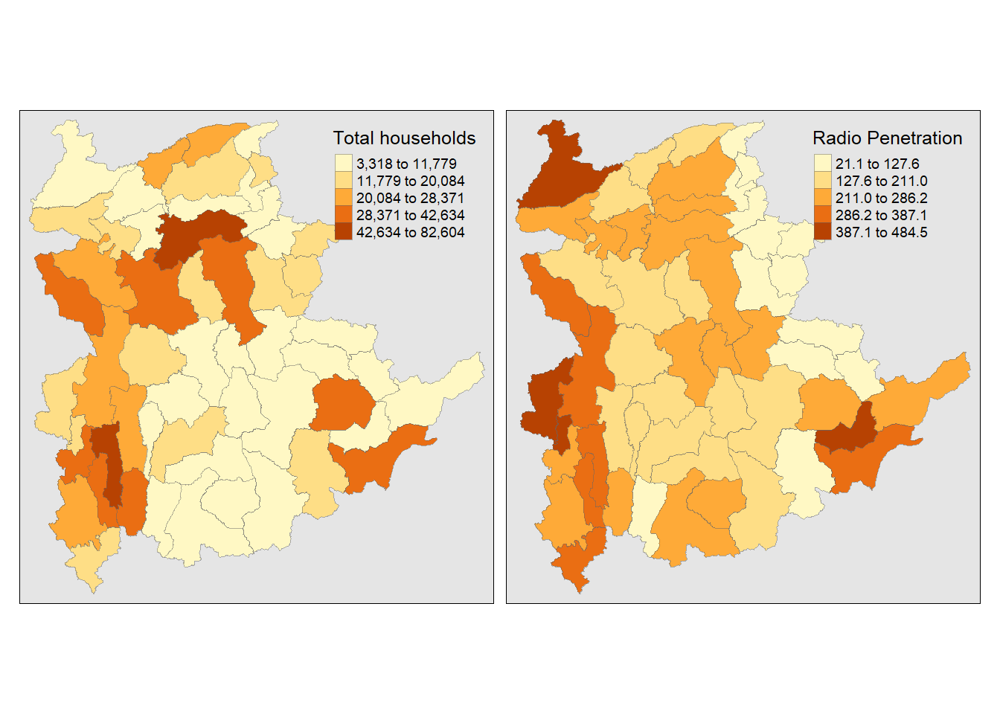
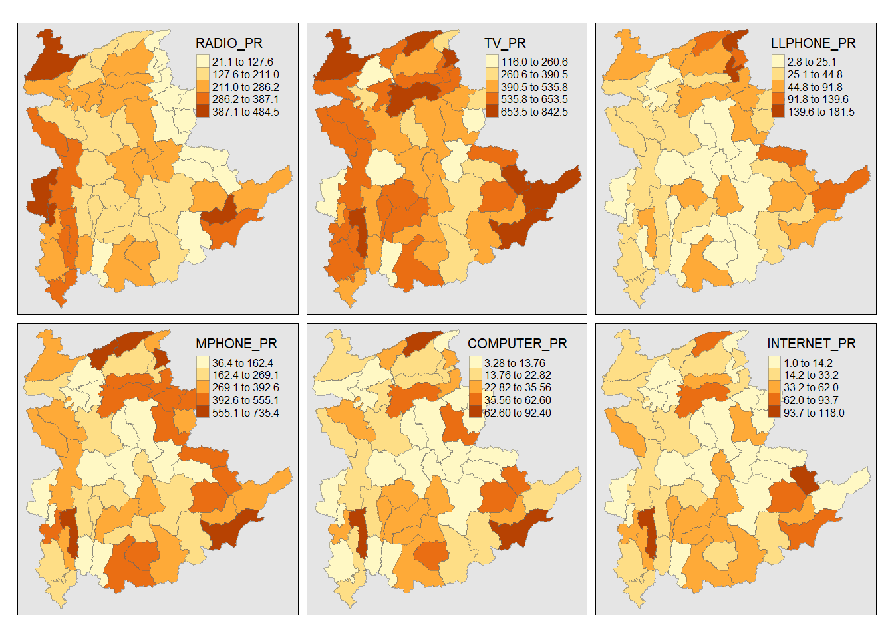
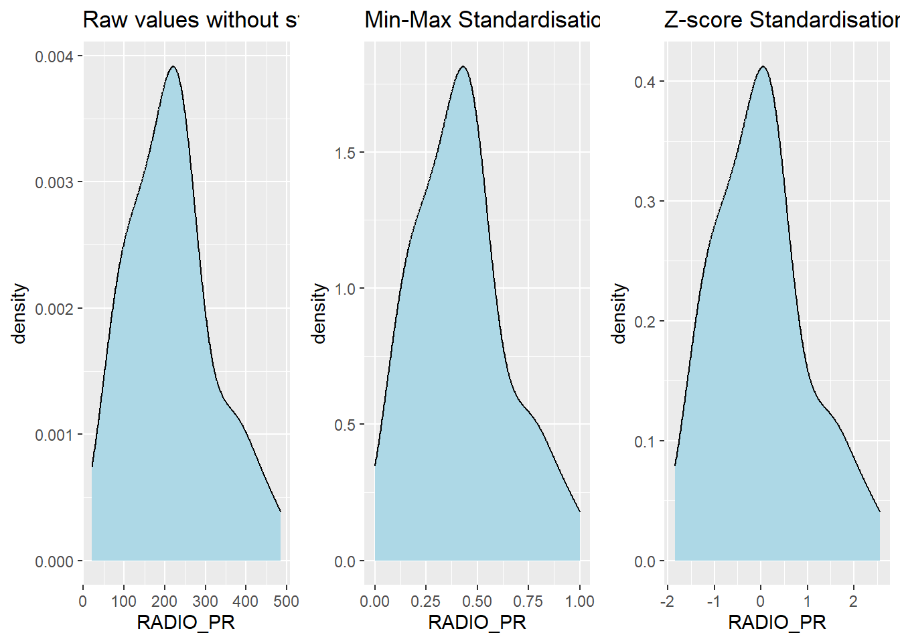

pacman::p_load(spdep, tmap, sf, ClustGeo,
ggpubr, cluster, factoextra, NbClust,
heatmaply, corrplot, psych, tidyverse, GGally)Geographic Segmentation wwith Spatially Constrained Clustering Techniques
In this hands-on exercise, we apply hierarchical cluster analysis and spatially constrained cluster analysis to delineate homogeneous regions based on geographically referenced data.
This exercise is based on Chapter 12 of Dr Kam’s online book which can be accessed here.
Getting Started
Analytical Question
In the development of spatial policy and for business, it is often important to segregate homogenous regions using multivariate data. We apply techniques in the study of Shan State in Myanmar by using various indicators.
Data Sources
Data for this exercise are based on information for Myanmar and for its Shan state:
Myanmar township boundary data in ESRI shapefile format (polygon)
Shan state ICT indicators for 2014 contained in a csv file
Installing and launching R packages
This exercise will make use of thirteen R packages:
sf, rgdal, spdep - for spatial data handling
tidyverse - collection of packages for performing data importation, wrangling and visualization
tmap - for plotting cartographic quality maps
coorplot, ggpubr, heatmaply - packages for multivariate data visualization and analysis
cluster, ClustGeo - packages for performing cluster analysis
The code chunk below uses p_load() of pacman package to check if the packages are installed in the computer. It installs them first if they are not. It then loads them into R.
We also define a random seed value for repeatability where of any randmoized results.
set.seed(1234)Data Import and Preparation
Data Loading - Shan state boundary
The code chunk below uses st_read() of the sf package to load the Myanmar township boundary shapefile into an R object. The code chunk includes a pipeline to already filter to the Shan state and include only the relevant columns.
shan_sf <- st_read(dsn = "data/geospatial",
layer = "myanmar_township_boundaries") %>%
filter(ST %in% c("Shan (East)", "Shan (North)", "Shan (South)")) %>%
select(c(2:7))Reading layer `myanmar_township_boundaries' from data source
`C:\drkrodriguez\ISSS626-GAA\Hands-on\Hands-On_Ex09\data\geospatial'
using driver `ESRI Shapefile'
Simple feature collection with 330 features and 14 fields
Geometry type: MULTIPOLYGON
Dimension: XY
Bounding box: xmin: 92.17275 ymin: 9.671252 xmax: 101.1699 ymax: 28.54554
Geodetic CRS: WGS 84We can inspect the contents of shan_sf using the code chunk below
shan_sfSimple feature collection with 55 features and 6 fields
Geometry type: MULTIPOLYGON
Dimension: XY
Bounding box: xmin: 96.15107 ymin: 19.29932 xmax: 101.1699 ymax: 24.15907
Geodetic CRS: WGS 84
First 10 features:
ST ST_PCODE DT DT_PCODE TS TS_PCODE
1 Shan (North) MMR015 Mongmit MMR015D008 Mongmit MMR015017
2 Shan (South) MMR014 Taunggyi MMR014D001 Pindaya MMR014006
3 Shan (South) MMR014 Taunggyi MMR014D001 Ywangan MMR014007
4 Shan (South) MMR014 Taunggyi MMR014D001 Pinlaung MMR014009
5 Shan (North) MMR015 Mongmit MMR015D008 Mabein MMR015018
6 Shan (South) MMR014 Taunggyi MMR014D001 Kalaw MMR014005
7 Shan (South) MMR014 Taunggyi MMR014D001 Pekon MMR014010
8 Shan (South) MMR014 Taunggyi MMR014D001 Lawksawk MMR014008
9 Shan (North) MMR015 Kyaukme MMR015D003 Nawnghkio MMR015013
10 Shan (North) MMR015 Kyaukme MMR015D003 Kyaukme MMR015012
geometry
1 MULTIPOLYGON (((96.96001 23...
2 MULTIPOLYGON (((96.7731 21....
3 MULTIPOLYGON (((96.78483 21...
4 MULTIPOLYGON (((96.49518 20...
5 MULTIPOLYGON (((96.66306 24...
6 MULTIPOLYGON (((96.49518 20...
7 MULTIPOLYGON (((97.14738 19...
8 MULTIPOLYGON (((96.94981 22...
9 MULTIPOLYGON (((96.75648 22...
10 MULTIPOLYGON (((96.95498 22...The sf dataframe conforms to the tidy framework. Given this, we can also use glimpse() to reveal the fields’ data types.
glimpse(shan_sf)Rows: 55
Columns: 7
$ ST <chr> "Shan (North)", "Shan (South)", "Shan (South)", "Shan (South)…
$ ST_PCODE <chr> "MMR015", "MMR014", "MMR014", "MMR014", "MMR015", "MMR014", "…
$ DT <chr> "Mongmit", "Taunggyi", "Taunggyi", "Taunggyi", "Mongmit", "Ta…
$ DT_PCODE <chr> "MMR015D008", "MMR014D001", "MMR014D001", "MMR014D001", "MMR0…
$ TS <chr> "Mongmit", "Pindaya", "Ywangan", "Pinlaung", "Mabein", "Kalaw…
$ TS_PCODE <chr> "MMR015017", "MMR014006", "MMR014007", "MMR014009", "MMR01501…
$ geometry <MULTIPOLYGON [°]> MULTIPOLYGON (((96.96001 23..., MULTIPOLYGON (((…Data Loading - Shan state 2014 indicators (aspatial)
The code chunk below uses read_csv() to load the contents of the csv file into an object ict
ict <- read_csv ("data/aspatial/Shan-ICT.csv")Rows: 55 Columns: 11
── Column specification ────────────────────────────────────────────────────────
Delimiter: ","
chr (4): District Pcode, District Name, Township Pcode, Township Name
dbl (7): Total households, Radio, Television, Land line phone, Mobile phone,...
ℹ Use `spec()` to retrieve the full column specification for this data.
ℹ Specify the column types or set `show_col_types = FALSE` to quiet this message.We can use head() to check the first 6 elements of the object,
head(ict)# A tibble: 6 × 11
`District Pcode` `District Name` `Township Pcode` `Township Name`
<chr> <chr> <chr> <chr>
1 MMR014D001 Taunggyi MMR014001 Taunggyi
2 MMR014D001 Taunggyi MMR014002 Nyaungshwe
3 MMR014D001 Taunggyi MMR014003 Hopong
4 MMR014D001 Taunggyi MMR014004 Hsihseng
5 MMR014D001 Taunggyi MMR014005 Kalaw
6 MMR014D001 Taunggyi MMR014006 Pindaya
# ℹ 7 more variables: `Total households` <dbl>, Radio <dbl>, Television <dbl>,
# `Land line phone` <dbl>, `Mobile phone` <dbl>, Computer <dbl>,
# `Internet at home` <dbl>and summary() to display summary statistics of the numeric columns.
summary(ict) District Pcode District Name Township Pcode Township Name
Length:55 Length:55 Length:55 Length:55
Class :character Class :character Class :character Class :character
Mode :character Mode :character Mode :character Mode :character
Total households Radio Television Land line phone
Min. : 3318 Min. : 115 Min. : 728 Min. : 20.0
1st Qu.: 8711 1st Qu.: 1260 1st Qu.: 3744 1st Qu.: 266.5
Median :13685 Median : 2497 Median : 6117 Median : 695.0
Mean :18369 Mean : 4487 Mean :10183 Mean : 929.9
3rd Qu.:23471 3rd Qu.: 6192 3rd Qu.:13906 3rd Qu.:1082.5
Max. :82604 Max. :30176 Max. :62388 Max. :6736.0
Mobile phone Computer Internet at home
Min. : 150 Min. : 20.0 Min. : 8.0
1st Qu.: 2037 1st Qu.: 121.0 1st Qu.: 88.0
Median : 3559 Median : 244.0 Median : 316.0
Mean : 6470 Mean : 575.5 Mean : 760.2
3rd Qu.: 7177 3rd Qu.: 507.0 3rd Qu.: 630.5
Max. :48461 Max. :6705.0 Max. :9746.0 The dataset contains 11 fields with 55 observations. The numeric fields give the total number of households in each township, and the number of households with the corresponding technology or appliance. (e.g., television, internet connection, etc)
Deriving new indicator variables
Using the numeric fields directly will be highly biased as it depends on the number of households in the township. (i.e., townships with higher total households are likely to have higher values for all other columns) To overcome this problem, we can derive the penetration rates (PR) of each of the items by computing the number of households with that item per 1000 households. We accomplish this using mutate() from dplyr package in the code below.
ict_derived <- ict %>%
mutate(`RADIO_PR` = `Radio`/`Total households`*1000) %>%
mutate(`TV_PR` = `Television`/`Total households`*1000) %>%
mutate(`LLPHONE_PR` = `Land line phone`/`Total households`*1000) %>%
mutate(`MPHONE_PR` = `Mobile phone`/`Total households`*1000) %>%
mutate(`COMPUTER_PR` = `Computer`/`Total households`*1000) %>%
mutate(`INTERNET_PR` = `Internet at home`/`Total households`*1000) %>%
rename(`DT_PCODE` =`District Pcode`,`DT`=`District Name`,
`TS_PCODE`=`Township Pcode`, `TS`=`Township Name`,
`TT_HOUSEHOLDS`=`Total households`,
`RADIO`=`Radio`, `TV`=`Television`,
`LLPHONE`=`Land line phone`, `MPHONE`=`Mobile phone`,
`COMPUTER`=`Computer`, `INTERNET`=`Internet at home`) We can use summary() again to display summary statistics on the 6 new columns.
summary(ict_derived[c(12:17)]) RADIO_PR TV_PR LLPHONE_PR MPHONE_PR
Min. : 21.05 Min. :116.0 Min. : 2.78 Min. : 36.42
1st Qu.:138.95 1st Qu.:450.2 1st Qu.: 22.84 1st Qu.:190.14
Median :210.95 Median :517.2 Median : 37.59 Median :305.27
Mean :215.68 Mean :509.5 Mean : 51.09 Mean :314.05
3rd Qu.:268.07 3rd Qu.:606.4 3rd Qu.: 69.72 3rd Qu.:428.43
Max. :484.52 Max. :842.5 Max. :181.49 Max. :735.43
COMPUTER_PR INTERNET_PR
Min. : 3.278 Min. : 1.041
1st Qu.:11.832 1st Qu.: 8.617
Median :18.970 Median : 22.829
Mean :24.393 Mean : 30.644
3rd Qu.:29.897 3rd Qu.: 41.281
Max. :92.402 Max. :117.985 Joining spatial and aspatial data
For later map preparations, we need to combine the two datasets (geospatial shan_sf, aspatial ict_derived) into a single object. We do this using the left_join() function of the dplyr package. Both datasets have a common field TS_PCODE which will be treated as the unique identifier or joining key.
shan_sf <- left_join(shan_sf,
ict_derived, by=c("TS_PCODE"="TS_PCODE"))
write_rds(shan_sf, "data/rds/shan_sf.rds")The code includes creation of a new rds file so we can use the following code in the future to read this joined dataset without performing all the steps above.
shan_sf <- read_rds("data/rds/shan_sf.rds")Exploratory Data Analysis (EDA)
EDA using statistical graphics
We can use histograms to visualize the overall distribution of data values– e.g., the shape or skewness. The code chunk below produces on for the field RADIO_PR.
ggplot(data=ict_derived,
aes(x=`RADIO_PR`)) +
geom_histogram(bins=20, color="black", fill="light blue") +
xlab("Radio Penetration Rate, per K-HH") +
ylab("No. of Townships")
We can also use boxplots for identifying the median, quartiles, and outliers in the data.
ggplot(data=ict_derived,
aes(x=`RADIO_PR`)) +
geom_boxplot(color="black",
fill="light blue")+
xlab("Radio Penetration Rate, per K-HH")
We can create multiple histograms side by side by creating objects for each variable’s histogram, and then laying them out in a grid with ggarange() of the ggpubr package.
radio <- ggplot(data=ict_derived, aes(x= `RADIO_PR`)) +
geom_histogram(bins=20,color="black", fill="light blue") +
xlab("Radio PR") +
ylab("No. of Townships")
tv <- ggplot(data=ict_derived, aes(x= `TV_PR`)) +
geom_histogram(bins=20, color="black", fill="light blue") +
xlab("TV PR") +
ylab("No. of Townships")
llphone <- ggplot(data=ict_derived, aes(x= `LLPHONE_PR`)) +
geom_histogram(bins=20, color="black", fill="light blue") +
xlab("Landline Phone PR") +
ylab("No. of Townships")
mphone <- ggplot(data=ict_derived, aes(x= `MPHONE_PR`)) +
geom_histogram(bins=20, color="black", fill="light blue") +
xlab("Mobile Phone PR") +
ylab("No. of Townships")
computer <- ggplot(data=ict_derived, aes(x= `COMPUTER_PR`)) +
geom_histogram(bins=20, color="black", fill="light blue") +
xlab("Computer PR") +
ylab("No. of Townships")
internet <- ggplot(data=ict_derived, aes(x= `INTERNET_PR`)) +
geom_histogram(bins=20, color="black", fill="light blue") +
xlab("Internet PR") +
ylab("No. of Townships")ggarrange(radio, tv, llphone, mphone, computer, internet,
ncol = 3, nrow = 2)
EDA using choropleth map
The code chunk below prepares a choropleth map of the Shan state and the Radio penetration rate using qtm()
qtm(shan_sf, "RADIO_PR")
The above map is based on the derived penetration rate. We can use choropleth maps to go back to the earliest statement that using the raw variables are likely to be biased on the number of households. We can use the code chunk below to look at them side by side. We use the approach of passing multiple arguments instead of using tmap_arrange()
tm_shape(shan_sf) +
tm_fill(col = c("TT_HOUSEHOLDS", "RADIO"),
n = 5,style = "jenks",
title = c("Total households","Number Radio")) +
tm_borders(alpha = 0.5) +
tm_layout(legend.position = c("right", "top"), bg.color = "grey90")
The above map shows that townships with high number of households with radios, also are towns with the high number of households. We can produce a second map to see if the penetration rate and the total number of households are correlated.
tm_shape(shan_sf) +
tm_fill(col = c("TT_HOUSEHOLDS", "RADIO_PR"),
n = 5,style = "jenks",
title = c("Total households","Radio Penetration")) +
tm_borders(alpha = 0.5) +
tm_layout(legend.position = c("right", "top"), bg.color = "grey90")
The second pair of maps shows no strong correlation between townships having high number of households and having high radio penetration rates.
Finally, we can show the six derived variables visually using a similar approach in the code chunk below. The viewer needs to be mindful of the data classes. While the darker the shading means a higher value for that derived variable, the range of values are different between pairs of variables.
tm_shape(shan_sf) +
tm_fill(col = c("RADIO_PR", "TV_PR", "LLPHONE_PR",
"MPHONE_PR", "COMPUTER_PR", "INTERNET_PR"),
n = 5,style = "jenks") +
tm_borders(alpha = 0.5) +
tm_layout(legend.position = c("right", "top"), bg.color = "grey90")
Correlation Analysis
Before we perform cluster analysis, it is important to check that the cluster variables are not highly correlated.
In the code chunk below, we use corrplot.mixed() from the corrplot package to visualize the correlation between vairables
cluster_vars.cor = cor(ict_derived[,12:17])
corrplot.mixed(cluster_vars.cor,
lower = "ellipse",
upper = "number",
tl.pos = "lt",
diag = "l",
tl.col = "black")
The plot above shows that COMPUTER_PR and INTERNET_PR are highly correlated (coefficient of 0.87, shown as a very dark blue oval) This suggests that only one of these variables should be used in cluster analysis.
Hierarchical Cluster Analysis
In this section, we perform hierarchical cluster analysis which is done in a few steps steps
Selecting and extracting cluster variables
The code chunk below will be used to extract the clustering variables from the shan_sf dataframe. We have chosen to include COMPUTER_PR rather than INTERNET_PR for the cluster analysis
cluster_vars <- shan_sf %>%
st_set_geometry(NULL) %>%
select("TS.x", "RADIO_PR", "TV_PR", "LLPHONE_PR", "MPHONE_PR", "COMPUTER_PR")
head(cluster_vars,10) TS.x RADIO_PR TV_PR LLPHONE_PR MPHONE_PR COMPUTER_PR
1 Mongmit 286.1852 554.1313 35.30618 260.6944 12.15939
2 Pindaya 417.4647 505.1300 19.83584 162.3917 12.88190
3 Ywangan 484.5215 260.5734 11.93591 120.2856 4.41465
4 Pinlaung 231.6499 541.7189 28.54454 249.4903 13.76255
5 Mabein 449.4903 708.6423 72.75255 392.6089 16.45042
6 Kalaw 280.7624 611.6204 42.06478 408.7951 29.63160
7 Pekon 318.6118 535.8494 39.83270 214.8476 18.97032
8 Lawksawk 387.1017 630.0035 31.51366 320.5686 21.76677
9 Nawnghkio 349.3359 547.9456 38.44960 323.0201 15.76465
10 Kyaukme 210.9548 601.1773 39.58267 372.4930 30.94709The next step is to change the row names or indices to the township names rather than the row numbers
row.names(cluster_vars) <- cluster_vars$"TS.x"
head(cluster_vars,10) TS.x RADIO_PR TV_PR LLPHONE_PR MPHONE_PR COMPUTER_PR
Mongmit Mongmit 286.1852 554.1313 35.30618 260.6944 12.15939
Pindaya Pindaya 417.4647 505.1300 19.83584 162.3917 12.88190
Ywangan Ywangan 484.5215 260.5734 11.93591 120.2856 4.41465
Pinlaung Pinlaung 231.6499 541.7189 28.54454 249.4903 13.76255
Mabein Mabein 449.4903 708.6423 72.75255 392.6089 16.45042
Kalaw Kalaw 280.7624 611.6204 42.06478 408.7951 29.63160
Pekon Pekon 318.6118 535.8494 39.83270 214.8476 18.97032
Lawksawk Lawksawk 387.1017 630.0035 31.51366 320.5686 21.76677
Nawnghkio Nawnghkio 349.3359 547.9456 38.44960 323.0201 15.76465
Kyaukme Kyaukme 210.9548 601.1773 39.58267 372.4930 30.94709We see that the row numbers have been replaced with the township names, however, the township names are now duplicated. We solve this by using the code chunk below
shan_ict <- select(cluster_vars, c(2:6))
head(shan_ict, 10) RADIO_PR TV_PR LLPHONE_PR MPHONE_PR COMPUTER_PR
Mongmit 286.1852 554.1313 35.30618 260.6944 12.15939
Pindaya 417.4647 505.1300 19.83584 162.3917 12.88190
Ywangan 484.5215 260.5734 11.93591 120.2856 4.41465
Pinlaung 231.6499 541.7189 28.54454 249.4903 13.76255
Mabein 449.4903 708.6423 72.75255 392.6089 16.45042
Kalaw 280.7624 611.6204 42.06478 408.7951 29.63160
Pekon 318.6118 535.8494 39.83270 214.8476 18.97032
Lawksawk 387.1017 630.0035 31.51366 320.5686 21.76677
Nawnghkio 349.3359 547.9456 38.44960 323.0201 15.76465
Kyaukme 210.9548 601.1773 39.58267 372.4930 30.94709Data standardisation
Multiple variables will usually have different range of values. If we use them as is for cluster analysis, then the clustering will be biased towards variables with larger values. It is useful to standardise the clustering variables to reduce the risk of this occuring.
Min-max standardisation
The code chunk below uses normalize() of heatmaply package to standardise the clustering variables using min-max method. We then use summary() to show that the ranges of each variable have transformed to [0,1]
shan_ict.std <- normalize(shan_ict)
summary(shan_ict.std) RADIO_PR TV_PR LLPHONE_PR MPHONE_PR
Min. :0.0000 Min. :0.0000 Min. :0.0000 Min. :0.0000
1st Qu.:0.2544 1st Qu.:0.4600 1st Qu.:0.1123 1st Qu.:0.2199
Median :0.4097 Median :0.5523 Median :0.1948 Median :0.3846
Mean :0.4199 Mean :0.5416 Mean :0.2703 Mean :0.3972
3rd Qu.:0.5330 3rd Qu.:0.6750 3rd Qu.:0.3746 3rd Qu.:0.5608
Max. :1.0000 Max. :1.0000 Max. :1.0000 Max. :1.0000
COMPUTER_PR
Min. :0.00000
1st Qu.:0.09598
Median :0.17607
Mean :0.23692
3rd Qu.:0.29868
Max. :1.00000 Z-score standardisation
We can perform z-score standardisation by using scale() of Base R. We use describe() of psych package to display some statistics of the standardised columns. These show that each of the variables have been transformed to have a mean of 1 and a standard deviation of 1
shan_ict.z <- scale(shan_ict)
describe(shan_ict.z) vars n mean sd median trimmed mad min max range skew kurtosis
RADIO_PR 1 55 0 1 -0.04 -0.06 0.94 -1.85 2.55 4.40 0.48 -0.27
TV_PR 2 55 0 1 0.05 0.04 0.78 -2.47 2.09 4.56 -0.38 -0.23
LLPHONE_PR 3 55 0 1 -0.33 -0.15 0.68 -1.19 3.20 4.39 1.37 1.49
MPHONE_PR 4 55 0 1 -0.05 -0.06 1.01 -1.58 2.40 3.98 0.48 -0.34
COMPUTER_PR 5 55 0 1 -0.26 -0.18 0.64 -1.03 3.31 4.34 1.80 2.96
se
RADIO_PR 0.13
TV_PR 0.13
LLPHONE_PR 0.13
MPHONE_PR 0.13
COMPUTER_PR 0.13Visualising the standardised clustering variables
Aside from viewing the statistics of the standardised variables, it is also good practice to visualise their distribution graphically.
The code chunk below produces histograms to show the RADIO_PR field without and with standardisation
r <- ggplot(data=ict_derived, aes(x= `RADIO_PR`)) +
geom_histogram(bins=20, color="black", fill="light blue") +
ggtitle("Raw values without standardisation")
shan_ict_s_df <- as.data.frame(shan_ict.std)
s <- ggplot(data=shan_ict_s_df, aes(x=`RADIO_PR`)) +
geom_histogram(bins=20, color="black", fill="light blue") +
ggtitle("Min-Max Standardisation")
shan_ict_z_df <- as.data.frame(shan_ict.z)
z <- ggplot(data=shan_ict_z_df, aes(x=`RADIO_PR`)) +
geom_histogram(bins=20, color="black", fill="light blue") +
ggtitle("Z-score Standardisation")
ggarrange(r, s, z,
ncol = 3,
nrow = 1)
Alternatively, we can view these as density plots using the code below.
r <- ggplot(data=ict_derived,
aes(x= `RADIO_PR`)) +
geom_density(color="black",
fill="light blue") +
ggtitle("Raw values without standardisation")
shan_ict_s_df <- as.data.frame(shan_ict.std)
s <- ggplot(data=shan_ict_s_df,
aes(x=`RADIO_PR`)) +
geom_density(color="black",
fill="light blue") +
ggtitle("Min-Max Standardisation")
shan_ict_z_df <- as.data.frame(shan_ict.z)
z <- ggplot(data=shan_ict_z_df,
aes(x=`RADIO_PR`)) +
geom_density(color="black",
fill="light blue") +
ggtitle("Z-score Standardisation")
ggarrange(r, s, z,
ncol = 3,
nrow = 1)
Computing the proximity matrix
xx